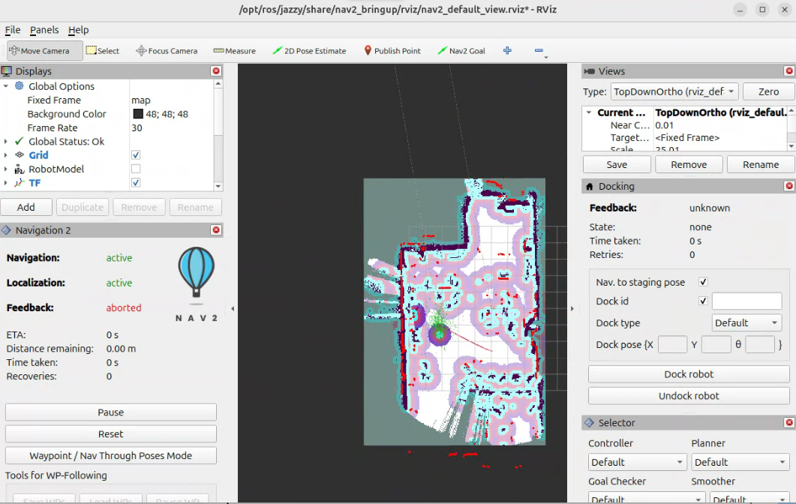

4e année — École d'ingénieur — ICAM
Projet Mécatronique – AGV
Conception, modélisation, dimensionnement, simulation et pilotage de deux véhicules guidés autonomes pour automatiser les flux internes d'une ligne de production industrielle.


Modélisation 3D interactive
Cette vue interactive permet de visualiser l'assemblage mécanique du projet AGV et d'observer les différents éléments de conception.

Modélisation 3D complète, simulations validées, architecture électronique définie et assemblée.
Tests de détection confirmés. Captures et analyses disponibles dans la section essais.
Assemblage mécanique final, développement ROS2 et programmation embarquée terminés.
Tests de navigation AGV 1 et AGV 2 réalisés et validés.
Optimisations possibles sur la fusion LiDAR + ultrasons et le SLAM en environnement complexe.
Fusion LiDAR + ultrasons, SLAM complet, optimisation énergétique, logs persistants.
Prototype en action